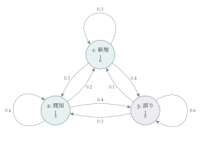

STEP III 1996、第12問
先に進む前に問題を読んでおこう。問題は STEP Support Programme の問題データベースにある： step.maths.org/questions/96-s3-q12
導入
エックス教授の定理には一定の規則がある。次に何を証明するかは、直前に何を証明したかだけで決まるのである。未来が現在には依存するが過去には依存しない過程をマルコフ連鎖（Markov chain）という。マルコフ連鎖はいたるところに現れる。気象モデル、すごろく遊びの「蛇と梯子」（Snakes and Ladders）、DNA のモデル、Google の初期の PageRank アルゴリズム、そして統計学者が複雑な確率分布をシミュレーションするために用いる手法などである。
この問題では、定理の種類が長期的にどのような割合で現れるか、すなわち定常分布（stationary distribution）を求める。長期的には、彼女の定理の \(6\) つに \(1\) つは新しく正しいものであり、半分は誤りである。さらに、この連鎖を時間について逆向きにたどり、「今日の定理がわかっているとき、昨日の定理は何だったか」を問う。
取りかかる前に
「各行の和が \(1\) である」という条件は何を意味するか。各列の和は \(1\) になるか。
第 \(i\) 行には、現在の種類が \(i\) であるときの、次の種類の確率が並んでいる。三つの種類のいずれかは必ず起こるので、各行の和は \(1\) である。一方、列についてはその必要はない。第 \(2\) 列の和はちょうど \(1\) であるが、第 \(1\) 列の和は \(0.6\)、第 \(3\) 列の和は \(1.4\) である。
順を追って解く
段階 1 1 ステップ
現在の定理の種類 \(i\) で条件づけて、全確率の法則（law of total probability）を用いると、 \[b_j = \sum_i\mathrm{P}(\text{現在が } i)\,\mathrm{P}(\text{次が } j \mid \text{現在が } i) = a_1p_{1j} + a_2p_{2j} + a_3p_{3j}. \qed\] 行列で表せば、行ベクトルについて \(\mathbf b = \mathbf aP\) である。
段階 2 定常分布
\(a_1 + a_2 + a_3 = 1\) のもとで \(\mathbf a = \mathbf aP\) となるものを求めたい。方程式を書き出してみよ。どれが最も簡単か。
方程式は \[\begin{aligned} a_1 &= 0.3a_1 + 0.2a_2 + 0.1a_3, \\ a_2 &= 0.3a_1 + 0.4a_2 + 0.3a_3, \\ a_3 &= 0.4a_1 + 0.4a_2 + 0.6a_3. \end{aligned}\] である（これらは独立ではない。三つを足し合わせると両辺とも \(a_1 + a_2 + a_3\) になる）。第 \(2\) 式から \(0.6a_2 = 0.3(a_1 + a_3) = 0.3(1 - a_2)\) となるので、\(a_2 = \frac13\) である。第 \(1\) 式から \(7a_1 = 2a_2 + a_3 = \frac23 + a_3\) であり、また \(a_1 + a_3 = \frac23\) であるから、\(8a_1 = \frac43\) となり、\(a_1 = \frac16\)、\(a_3 = \frac12\) を得る。すなわち \[(a_1, a_2, a_3) = \bigl(\tfrac16, \tfrac13, \tfrac12\bigr). \qed\]
段階 3 連鎖を逆向きにたどる
\(q_{ij} = \mathrm{P}(\text{直前が } i \mid \text{現在が } j)\) である。直前の定理と現在の定理の両方について定常分布を用いて、ベイズの定理（Bayes’ theorem）を適用せよ。
ベイズの定理により、 \[q_{ij} = \frac{\mathrm{P}(\text{直前が } i)\,\mathrm{P}(\text{現在が } j \mid \text{直前が } i)}{\mathrm{P}(\text{現在が } j)} = \frac{a_ip_{ij}}{a_j}.\] たとえば \(q_{11} = \frac{\frac16 \times 0.3}{\frac16} = 0.3\)、\(q_{21} = \frac{\frac13 \times 0.2}{\frac16} = 0.4\) である。すべてまとめると（\(i\) が行、\(j\) が列を表す）、 \[(q_{ij}) = \begin{pmatrix} 0.3 & 0.15 & \frac{2}{15} \\ 0.4 & 0.4 & \frac{4}{15} \\ 0.3 & 0.45 & 0.6 \end{pmatrix}. \qed\] 今度は各列の和が \(1\) になる。第 \(j\) 列には直前の定理としてありうる種類が並んでいるからである。

振り返り
行列としての全確率の法則。連鎖の 1 ステップは、行ベクトルに行列 \(P\) を掛けることである。
定常性とは固有ベクトルである。\(\mathbf a = \mathbf aP\) は、\(\mathbf a\) が \(P\) の固有値（eigenvalue）\(1\) に対する左固有ベクトル（left eigenvector）であることを意味する。
ベイズの定理で逆向きにする。逆向きの確率もまた確率行列（stochastic matrix）をなし、それは順向きの行列と定常分布から作られる。
背後にある数学
平衡への収束
エックス教授が任意の定理から始めたとしよう。そこから \(n\) 個の定理の後、種類の分布は \(\mathbf a_0P^n\) である。この連鎖のように、どの種類の後にもどの種類も続きうる連鎖では、出発点によらず、\(P^n\) はすべての行が定常分布 \((\frac16, \frac13, \frac12)\) に等しい行列に収束（convergence）する。収束の速さは \(P\) の残りの固有値（ここでは \(0.2\) と \(0.1\)）によって決まり、それらの寄与は等比数列的に小さくなる。わずか数個の定理の後には、彼女の過去は忘れ去られてしまうのである。マルコフ連鎖に関するこのエルゴード定理（ergodic theorem）は、大学 2 年次の確率論の講義の中心的な結果であり、マルコフ連鎖モンテカルロ法（Markov chain Monte Carlo）が機能する根拠でもある。複雑な分布からサンプルを得るには、その分布を定常分布にもつマルコフ連鎖を設計し、長時間走らせればよい。
可逆性
逆向きの連鎖 \((q_{ij})\) は順向きの連鎖 \((p_{ij})\) とは異なる。つまり、彼女の定理の長い記録を見れば、時間の向きを見分けることができる。逆向きと順向きが一致する連鎖、すなわちすべての \(i\)、\(j\) について \(a_ip_{ij} = a_jp_{ji}\) が成り立つ連鎖を可逆（reversible）であるという。ネットワーク上のランダムウォーク（random walk）や、熱平衡（thermal equilibrium）にある物理系のモデルがその例である。可逆性は強力な性質である。定常分布を容易に求められるようになるからである。
アンドレイ・マルコフ（Andrey Markov）は 1906 年に自らの連鎖を導入した。その動機の一つは、大数の法則（law of large numbers）が成り立つには独立性（independence）が必要だと主張していた数学者パーヴェル・ネクラーソフ（Pavel Nekrasov）との論争において、独立性は必要ないことを示すことであった。1913 年、マルコフはこの考えをプーシキン（Pushkin）の韻文小説エヴゲーニイ・オネーギンの最初の \(20\,000\) 文字に適用した。各文字を母音か子音かに分類し、各文字の種類が直前の文字の種類に依存し、その依存の仕方が 2 状態の連鎖でよく記述できることを示したのである。これは文章に対する最初の統計的分析であり、あらゆる予測変換システムの祖先である。
思考のスキル
系が一定の確率で状態の間を移り変わるときは、分布をベクトルとして、推移を行列として書け。すると、長期的な振る舞いは固有ベクトルについての問題になる。
大学では、これによって第 7 章の線形代数が確率論に持ち込まれる。ペロン–フロベニウスの定理（Perron–Frobenius theorem）が定常分布の存在を保証し、残りの固有値がそこへ到達する速さを測るのである。
次の一歩
ウサギの巣穴。STEP III 2003、第13問 に挑戦せよ。各頂点に出口のある正方形の頂点上のランダムウォークを、最初の 1 ステップに関する方程式によって解く問題である。
2 ステップ。エックス教授の直前の定理が新しく正しいものであったとき、その次の次の定理が三つの種類それぞれである確率を求めよ。
固有値。\(P\) の固有値が \(1\)、\(0.2\)、\(0.1\) であることを示せ。
可逆か？エックス教授の連鎖について \(a_ip_{ij} = a_jp_{ji}\) が成り立つかどうか確かめよ。その答えから何がわかるか。
さらに学ぶために
James Norris, Markov Chains（Cambridge University Press）。学部生向けの標準的な教科書である。
Olle Häggström, Finite Markov Chains and Algorithmic Applications（Cambridge University Press）。簡潔で、マルコフ連鎖モンテカルロ法の解説に優れる。
Brian Hayes, “First links in the Markov chain”, American Scientist 101 (2013)。マルコフによるプーシキンの分析を改めて紹介する記事である。